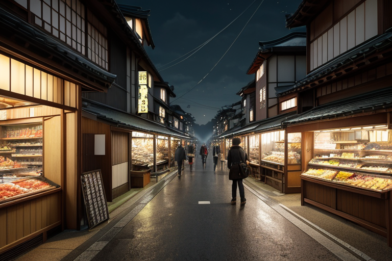
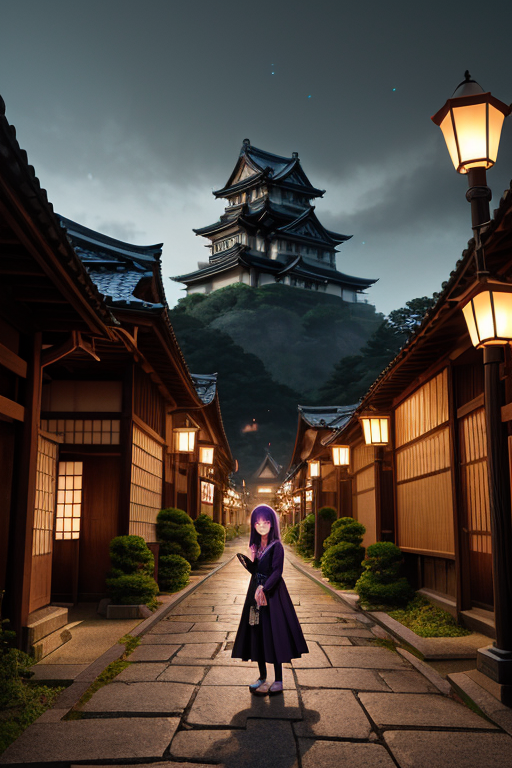
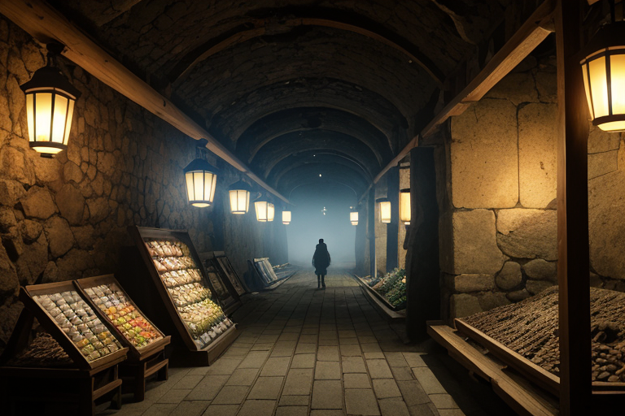
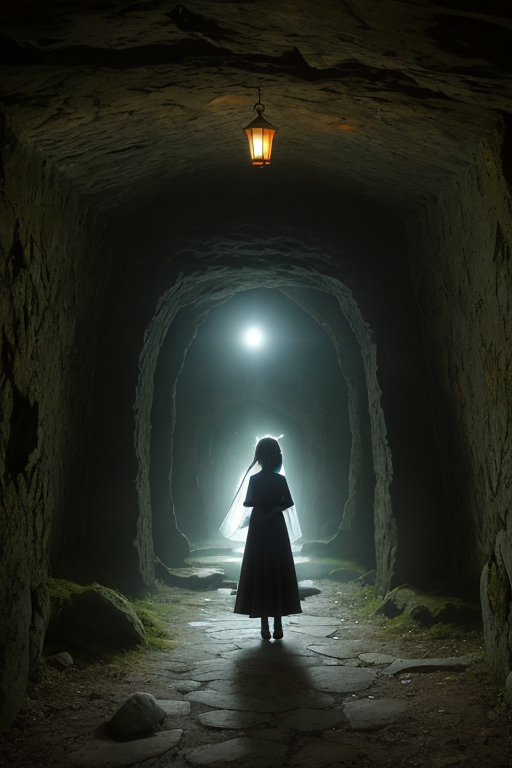
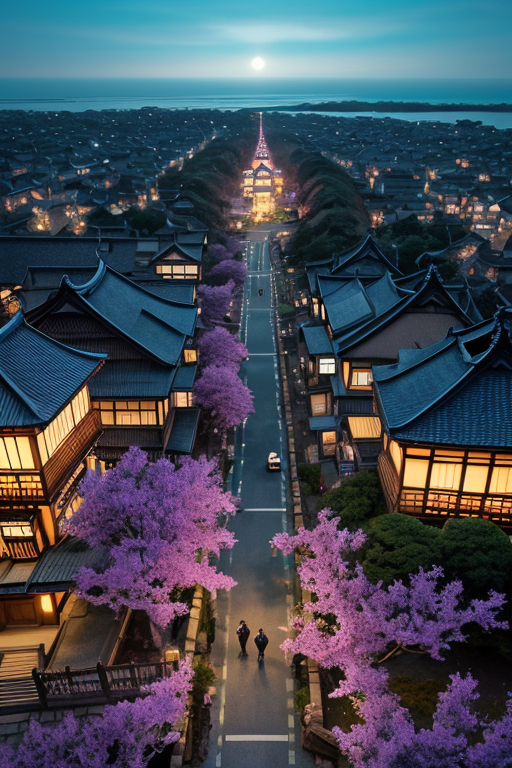

第一章 現実の島根
あなたはまだ気づいていない。この土地にも、王がいることを。
松江城下町の商店街は、午後の日差しを浴びて活気づいていた。観光客の笑い声、地元客の買い物かごの音、通りをゆく車のざわめき。そのすべてが、金と人の流れという目に見えない川を形作っている。路地裏の小さなそば屋では、出雲そばの湯気がゆらりと立ち上り、隣り合った見知らぬ客同士が、ほんの少し会話を交わす。それは取るに足らない、一瞬の縁だ。
その流れの底で、微かな歪みが生じていた。観光バスの一台のブレーキに、ほんのわずかな遅れ。商店街のアーケードを固定するボルト一本に、目に見えない疲労。それらは今は何も起こさない。だが、無数の偶然が積み重なれば、それは確かな現実となる災いの種だ。
紫と金の勾玉の紋章が、人混みの影でかすかに光った。王、イズモリア・ミスティカは、流れの中に立っていた。感情を持たぬはずのその目は、人と人とが交差するその一点、すなわち「縁」そのものを注視している。彼は手を上げない。ただ、そこに在る。

第二章 歪みの兆候
石見銀山の坑道を抜ける風は、数百年分の鉱石の気配を運んでくる。観光客のざわめきの奥で、岩盤は微かに唸っていた。銀の採掘がもたらした富の流れは、この土地の地質にまで「縁」を結び、目に見えない負債を蓄積させていた。
松江城天守からの眺めは、宍道湖を鏡にした町の営みを映す。だが、王の目には別の景色が見える。人々の欲望、商いの熱気、観光バスの排気ガス。それらが織りなす生きた気流が、地盤の微妙なバランスを、ごくわずかずつ蝕んでいる。商店街のアーケードのボルトは、その結果の一端に過ぎない。
「歪みは、縁の裏側に在る」と、王は呟く。妖精イズモナが、人混みの中をすり抜け、無数の「縁の糸」の張力を感知する。一本の糸が切れれば、それは一つの商談の破談で済むかもしれない。だが、万の糸が同時に不自然な緊張を帯びた時、それは地盤の呻きに変換される。王の仕事は、その万の糸の中から、ほんの数本を、ほんの一瞬だけ緩めることだ。必然を装った偶然を、ほんの少し調整する。

第三章 王の葛藤
石見銀山の坑道跡は、かつて人々の欲望が地を穿った痕だ。銀は富と縁を運び、争いと結びつきももたらした。王はその歴史の重みを、地層の微かな軋みとして感知する。今も、観光客の熱気と地元の期待が、目に見えない圧力を生み出している。
「この歪みは、人の『求める』心そのものだ」と、ミスティラが古い神話の言葉を引く。王は静かに頷く。商談が纏まる瞬間、観光バスが到着するタイミング、ふとした人との出会い。それら全てが「縁」という名の流れを構成し、時に過剰な負荷となる。王の調整は、時にその熱気を少し冷まし、流れを分散させることだ。一組の客が足立美術館への道を誤り、代わりに小さなそば屋を見つける。そのほんの少しの「ずれ」が、一点集中する力を和らげる。
しかし、王は思う。欲望そのものを否定することは、この地の息吹を否定することではないか。守護とは、ただ静穏を保つことなのか。紫と金の紋章が、坑道の闇に浮かぶように微かに輝いた。答えはまだ、出雲の海のように深く、霧の中にある。

第四章 妖精との対話
石見銀山の坑道跡は、かつての熱狂を冷めた石の記憶として保っていた。ミスティラは、その薄暗がりの中で、縁王に語りかけた。
「ここで交わされた銀は、欲望の結晶でした。しかし、その流れが、遠く都や海を越えた地と、この山を『縁』で結んだ。商いとは、物の交換ではなく、縁の交換なのです」
イズモナが、松江城下の賑わう通りを指さす。人々の行き交い、金銭の授受、そのすべてに、微かな「縁の波」が立っていた。
「この波を操作するのは、流れを止めることではありません。一点に集まりすぎる熱を、別の縁へとそっと振り向けること。あのそば屋への道案内も、ただの偶然ではない。必要な縁を、必要な時に、ほんの少し調整しているだけです」
王は黙って聞く。必然のように見える出会いも、偶然のように見えるすれ違いも、すべては巨大な縁の網の目の中の、ほんの一つの結び目に過ぎないのか。それとも、妖精たちが調整するその「ほんの少し」が、必然へと変える最後の一押しなのか。霧の中から聞こえるのは、神在月の波の音だけだった。

第五章「微調整と余韻」
松江城天守からの風は、日本海の潮香を運び、城下町の路地を抜けていく。観光客のざわめき、自転車のベル、店先での談笑。すべてが交差するその雑踏のただ中で、王は微かな縁の波紋を感じ取る。妖精イズモナが、人々の歩幅をほんの少しだけ調整する。ほんの一瞬、足を止めるタイミング。視線が合う角度。それは、巨大な商談の糸口かもしれないし、ただの道案内のきっかけかもしれない。必然へと向かうほんのわずかな傾きを、王は与えるだけだ。
石見銀山の坑道のように、人の人生は複雑に交差する。ある出会いは、妖精がほんの少し「縁波」を操作した結果かもしれない。だが、その後の縁を結び、太くするのは、常に人自身だ。王は、偶然と必然の狭間で、ほんの少しの「可能性」を調整する調整者に過ぎない。神在月が終わり、日常が戻っても、その微調整は続く。誰にも気づかれず、記録にも残らない。ただ、今日ここで交わした何気ない会話が、いつか大きな縁となるかもしれない、という余韻だけが、この国の空気に溶けている。
あなたの町にも、王がいる。